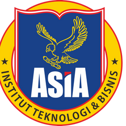
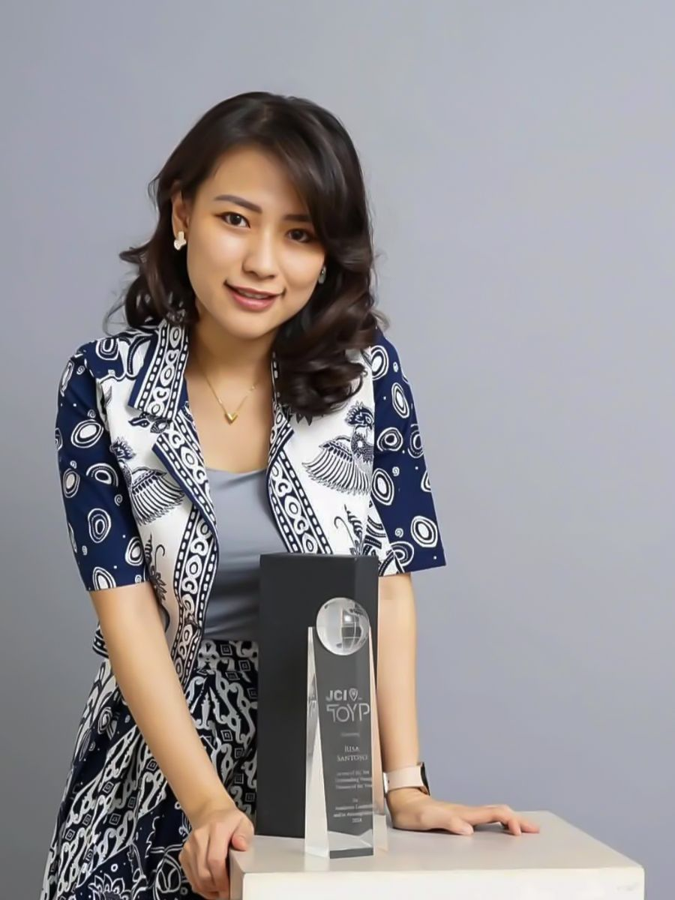

INSTITUT ASIASebagai salah satu kampus swasta di Kota Malang yang berfokus pada Teknologi dan Bisnis, Institut Asia menawarkan program kuliah yang relevan dengan dunia kerja.
Konsultasi GRATIS via WhatsAppSeluruh program studi berpusat pada Teknologi dan Bisnis, dua bidang yang menggerakkan hampir setiap industri saat ini.
Materi kuliah dirancang relevan dengan kebutuhan dunia kerja, termasuk pemanfaatan AI di setiap bidang.
Dibimbing pengajar yang memahami teori sekaligus berpengalaman langsung di industri.
Sudah berkarir? Pengalaman Anda diakui dan dikonversi menjadi pengurang masa studi melalui program S1 RPL.
Kuliah sambil bekerja dengan jadwal di luar jam kerja secara Hybrid (online + offline).

Kampus Institut Asia dipimpin oleh Rektor Risa Santoso, B.A., M.Ed., yang mencetak sejarah sebagai rektor termuda di Indonesia saat dilantik pada usia 27 tahun. Lulusan University of California, Berkeley (ekonomi) dan Harvard University (pendidikan) ini pernah mengabdi sebagai Tenaga Ahli Muda di Kantor Staf Kepresidenan (KSP).
Di bawah kepemimpinannya, Institut Asia aktif bertransformasi melalui inovasi kurikulum modern dan program inkubator bisnis untuk pemberdayaan ekonomi masyarakat. Beliau juga menerima penghargaan internasional JCI Ten Outstanding Young Persons (TOYP) World.
Di tahun 2027, akan hadir lebih banyak tokoh hebat Indonesia yang berbagi ilmu dengan Anda!
Khusus jika Anda klik tombol ini untuk konsultasi GRATIS!
Khusus jika Anda klik tombol ini untuk konsultasi GRATIS!